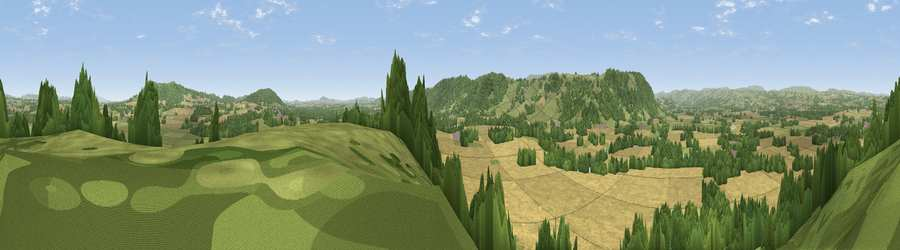

Oaker's Hill
#7305 in England · top 24% of its area beats it · near LettonWhere it is
The exact computed spot (SO 34624 45991). Click the marker for map links.
The view, rendered

A 360° render of this exact spot computed from the terrain model, tree cover and land cover — summer colours, afternoon light, calibrated against photographs of famous viewpoints. Real trees, hedges and buildings will differ in detail.
The panorama
Grey silhouette: terrain skyline in each direction (720 bearings, Earth curvature and refraction included). Dashed green: skyline with trees (+15 m) and buildings (+8 m) as obstacles. Blue strip: how far the ground is visible on each bearing.
Where the view opens
Wedge length = distance to the farthest visible ground on that bearing (vegetation-aware). Rings at 10, 25 and 50 km.
What fills the view
43% cropland · 30% grassland · 26% woodland
Angular shares of the visible panorama (visual magnitude), not map area. Landscape diversity 0.48 (0–1 Shannon).
Key numbers
More beautiful places nearby
The staircase of upgrades: each row has a higher view potential than everything closer. Driving times are estimates from straight-line distance, calibrated against real road routing — check an actual route before setting out.
| Place | Direction | Drive | Score |
|---|---|---|---|
| Bredwardine Hil | WSW · 3 km | ~8 min | 77.1 |
| Viewpoint near Middlewood | WSW · 4 km | ~9 min | 79.4 |
| Merbach Hill | WSW · 4 km | ~10 min | 81.1 |
| Viewpoint near Craswall | SW · 14 km | ~25 min | 81.5 |
| Garway Hill | SSE · 23 km | ~38 min | 84.6 |
| Herefordshire Beacon | E · 42 km | ~61 min | 85.8 |
| Millennium Hill | E · 42 km | ~61 min | 86.9 |
| Worcestershire Beacon | E · 42 km | ~62 min | 87.1 |
52.10837, -2.95601 · source: dobih hill · position refined by local search. Computed location — check access rights before visiting.